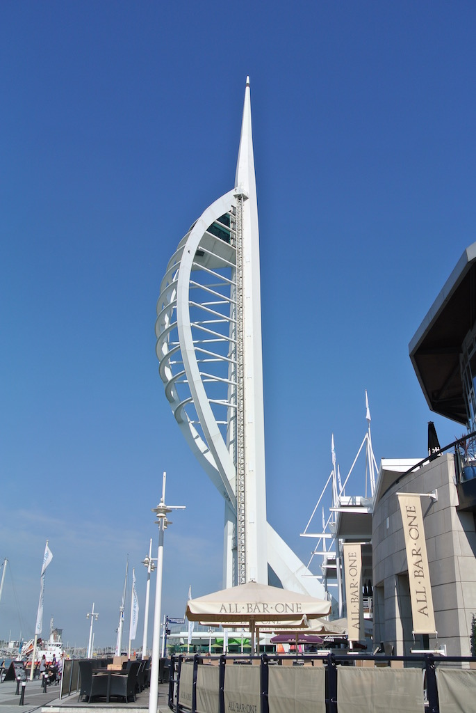
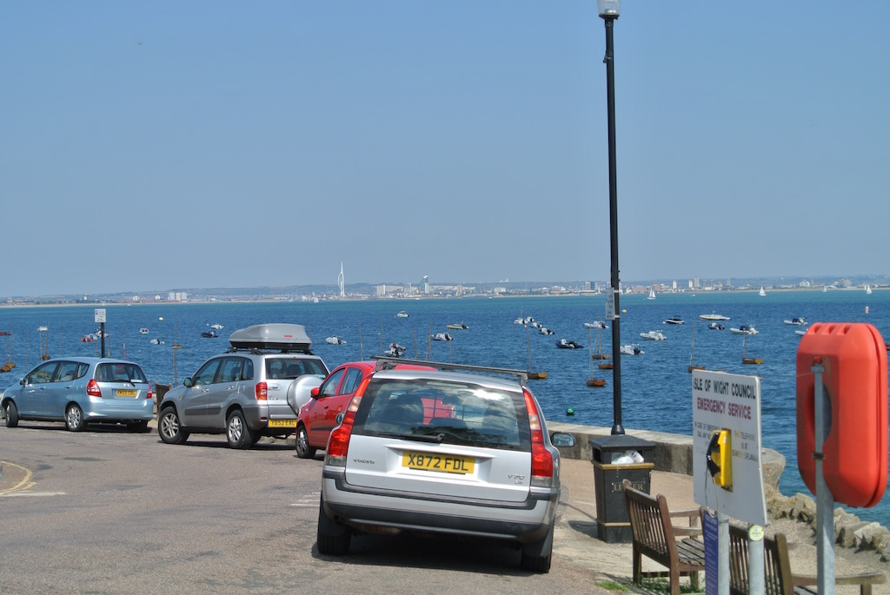
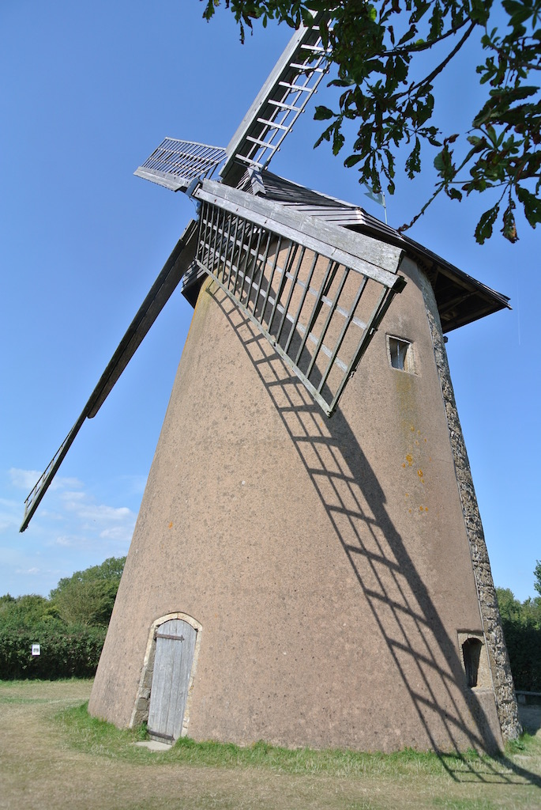
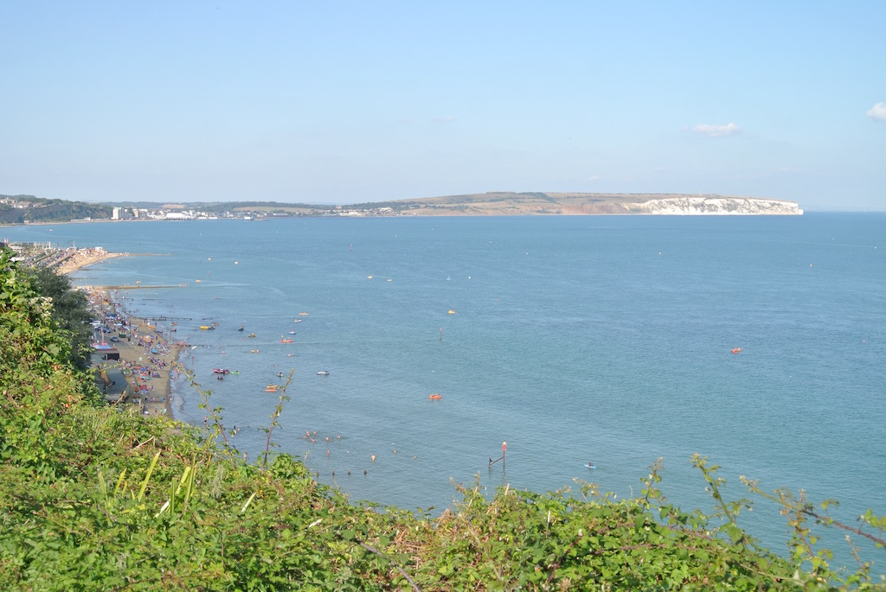
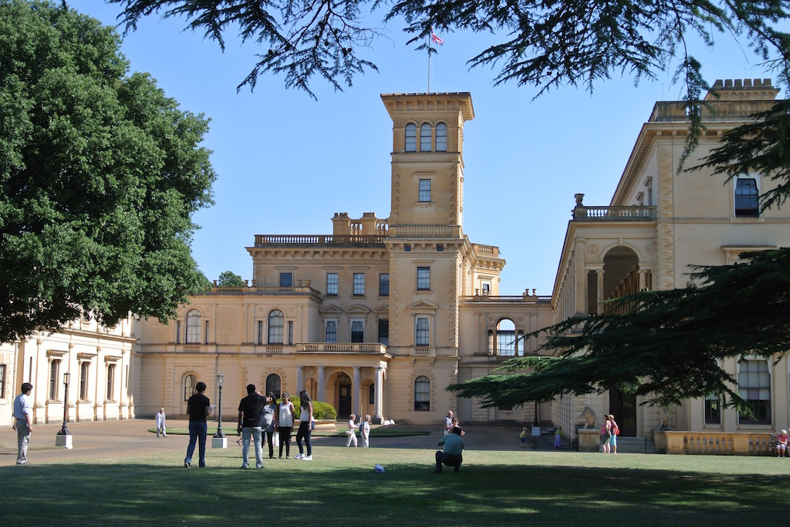
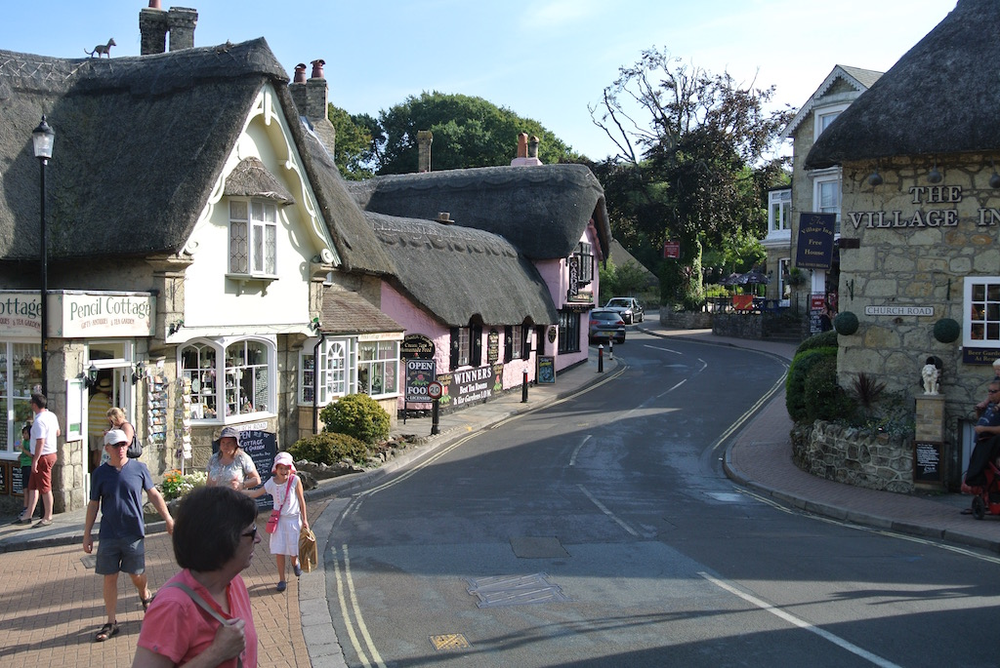
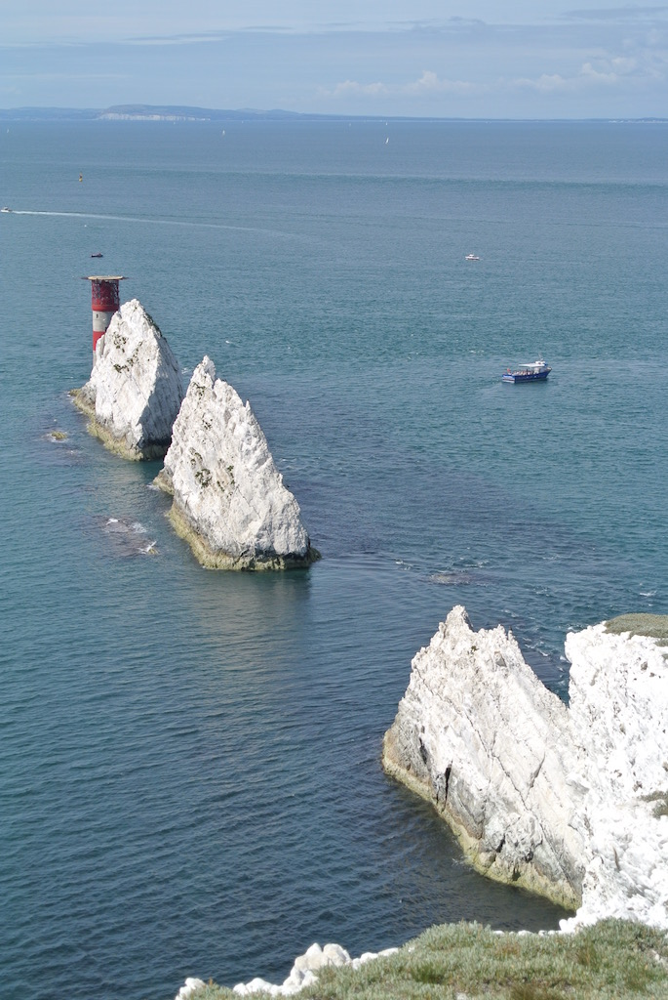
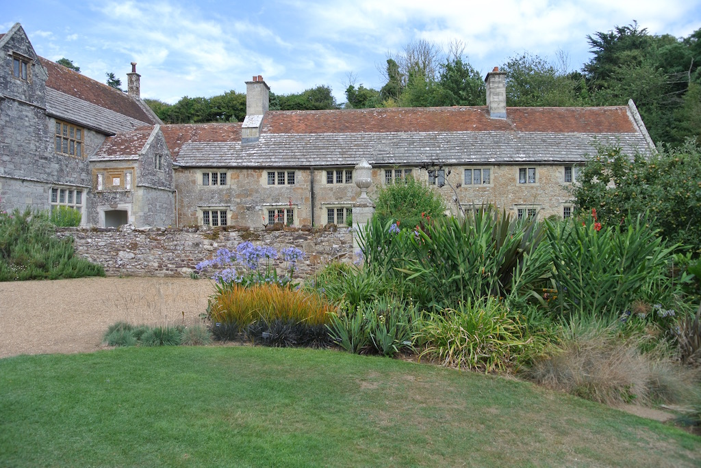
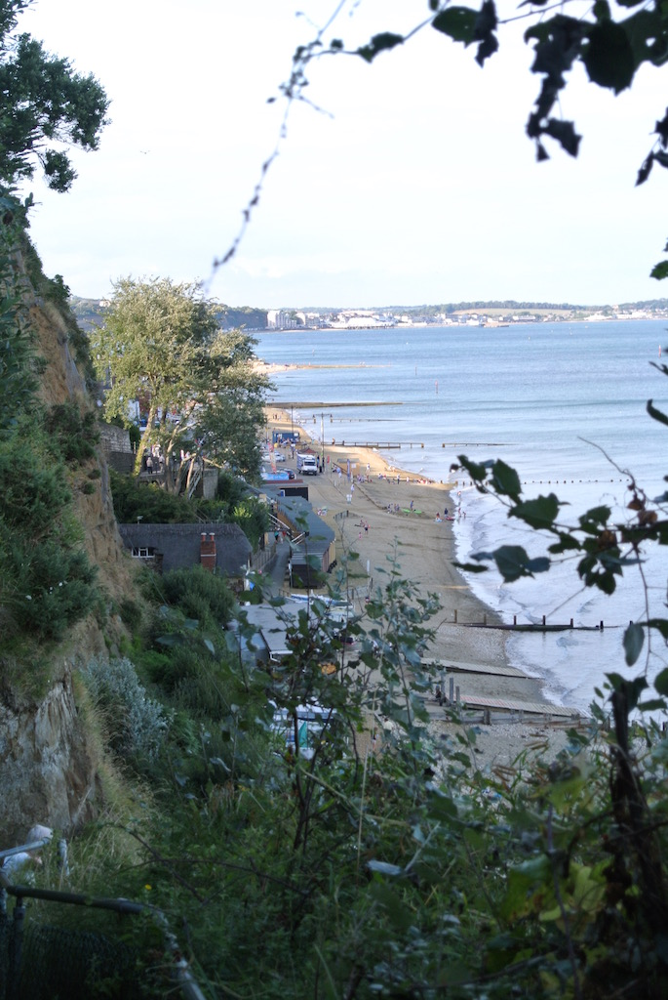
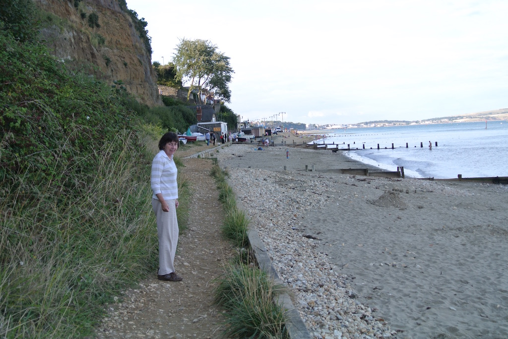

Isle of Wight 2013
Since we had been to St Kitts in January, we decided that it would be nice to have a short break in the UK during the late summer. We had not been to the Isle of Wight, so booked a short break in Shanklin Old Town.
The rest of this page is really a short journal of our stay.
Tuesday 27th August
An early start (well, we left at eight thirty) to Portsmouth. The traffic was light and so we were twenty minutes earlier than the maximum one hour before departure. So we needed to go out of the terminal and pay to park for three quarters of an hour. At least we had a chance to look briefly at the Gunwarf Quay area and the Spinnaker tower. When we returned to the terminal for the 11 o'clock sailing we seemed to be loaded on to the 10:30 boat, which was running a little late. I guess they just fill the boat with whichever cars are waiting. It was a sunny, calm morning and so the boat took the 'short route' and we were in Fishbourne at about ten past eleven.
We drove through Ryde and turned off the main road to go to a small village called Seaview. There we were able to park (for free) and eat our picnic lunch on a bench in the shade of a tree and overlooking the Solent.
Afterwards we drove on around the coast to Bedingham windmill. Apparently the only remaining windmill on the island. We also walked down to Steyne Woods because it was said that you might be able to see red squirrels there. But we did not even see any birds!
 We arrived at the hotel at about three thirty, unpacked and went for our complimentary cream tea in the tea shop (more like a shed) accessed through the gardens. We then went for a brief walk along the coastal path before looking at the hotel facilities. The indoor pool is very hot and humid and the outdoor pool looks cold! We thEn sat in the garden and ad before showering and going down for dinner. We are in the older part of the hotel and so the bedroom, though not very large, has a high ceiling and a bathroom that is almost as big as the bedroom.
We arrived at the hotel at about three thirty, unpacked and went for our complimentary cream tea in the tea shop (more like a shed) accessed through the gardens. We then went for a brief walk along the coastal path before looking at the hotel facilities. The indoor pool is very hot and humid and the outdoor pool looks cold! We thEn sat in the garden and ad before showering and going down for dinner. We are in the older part of the hotel and so the bedroom, though not very large, has a high ceiling and a bathroom that is almost as big as the bedroom.
The view from the hotel garden was spectacular, but dinner was a little disappointing. Angela made the best selection, but my crab started was spoilt by the batter and my Fisherman's pie was boring.
Wednesday 28th August
Another gloriously sunny day. We had a late breakfast, leaving the hotel about ten thirty, and drove north, through Newport, to Osbourne House. We followed the steam of people around the house before walking down to the 'Swiss Chalet', where we had a light lunch. We then walked on to Osbourne beach and finally took the 'ring' path back to the walled garden. The relatively few rooms that are open in the house are interesting because they are more or less as Victoria left them, even though the house was used for other purposes after her death.
We got back to the hotel a little after three thirty and walked down into Shanklin Old Vilage and into Shanklin town.
Thursday 29th August
After breakfast we walked into Shanklin to find a bus timetable, particularly being interested in busses that went to the Needles. So we set off along the coast through Ventnor (which was quite big) and on to Freshwater, where we found the long stay car park, left the car and caught the number 7 bus to Alum Bay. Just before getting there we met the back of a long queue of cars. However, the bus was called down the wrong side of the road so as to get to the Needles Park. Everyone else was queuing to get into the car park! We then walked the three quarters of a mile to the Old Battery. We went down into the searchlight tunnel and took photos of the needles. We then had a cursory look at the battery buildings before going up to the rocket testing site and the viewpoint, where I took more photos of the Needles. We caught the bus back to Freshwater, where we had a picnic lunch in the park.
From Freshwater we visited Mottistone Manor gardens (and had a cup of tea). The manor is lived in, but the gardens are owned by the National Trust. We then took an inland route back to Shanklin so as to miss the coastal road traffic.
After a short rest (and post of today's events) we walked down the steps to the beach. Luckily we found that you could walk up the other side of the Chine to the old village, which w a more gentle assent.
Friday 30th August
An exhausting day. Another latish start at Luscomme Hall Hotel. We walked into Shanklin to buy food for lunch and then checked out. Angela had seen some 'windmills' in the Bembridge Mill NT shop (actually in the entrance hut) and expected to see them in other NT shops. Since we did not see them we went back to the mill to buy two, for you-know-who. We had thought of then going to an apple orchard for a cup of coffee before going to the ferry terminal. However, we were short of time and so we took the back roads to bypass Ryde (actually past the apple orchard) and went straight to the terminal. We did not get on to the earlier ferry, but we eat our lunch on board and arrived in Portsmouth shortly after one o'clock. We were then home just after three thirty.
Getting home, of course, was just the start. We then needed to go out to do the week's shopping for Dad, Bay and us. Unfortunately I forgot to take Dad's key with me and so we had to bring his shopping home with us. We took Bay's groceries to her and managed to get away quickly so that we could start cooking our dinner.
© David James 2016 Last updated: 1 May 2016